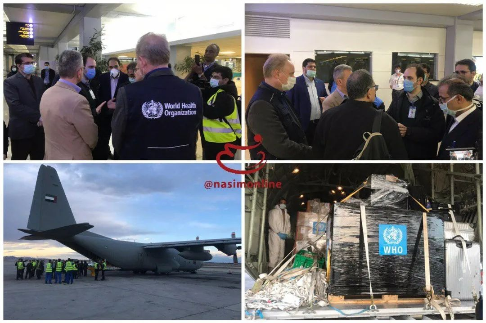

海外70余国累计确诊过万，新冠肺炎进入“全球化”阶段
原文链接 备份链接 图片来源：联合国新闻 记者：肖恩 “ 世卫组织称，世界正处于一个未知领域，但新冠肺炎在传播上不像流感，只要方法得当，完全有可能被遏制。 ” 新冠肺炎的蔓延开始呈现“全球化”趋势，覆盖六大洲超70国，中国以外累计确诊病例 …

目前，新冠肺炎疫情在多国持续蔓延，韩国、意大利、伊朗等国感染人数持续增加，比利时、约旦、沙特、塞内加尔、突尼斯、拉脱维亚等国2日宣布出现首例新冠肺炎确诊病例。
据世卫组织最新报告，截至欧洲中部时间3月2日上午10时（北京时间17时），中国境外共64个国家确诊新冠肺炎8774例，死亡共计128例。世卫组织总干事谭德塞表示，韩国、意大利、伊朗和日本的情况最令人担忧。


韩国累计确诊4812例 死亡29人
据韩国卫生部门消息，截至当地时间3日0时，韩国再次确诊新增477例新型冠状病毒感染病例，感染者总数升至4812人，死亡29人。3月2日总共报新增600人确诊感染。
当地时间3日，韩国总统文在寅在当天的会议中强调，现在韩国全国进入同传染病“战争”阶段，各级政府应认识到问题的严重性，所有政府机构要启动24小时应急体制以共同应对新型冠状病毒肺炎疫情。
此外，新天地教会的创始人李万熙2日下午举行记者会，代表新天地教会的信徒为新冠病毒在韩国迅速传播而向公众道歉。他还表示，将全力配合政府工作，共同抗击疫情。李万熙2月28日接受了新冠病毒检测，结果呈阴性。

意大利累计确诊病例2036例 52例死亡
当地时间2日18时，意大利民防部门负责人、新冠病毒应急委员会专员安杰洛·博雷利在例行疫情通报中表示，意大利新冠肺炎累计确诊病例2036例。其中，现存病例1835例，较前一天增加258例；死亡病例累计52例，较前一天增加18例；累计149例治愈，较前一天增加66例。目前，意大利已对23300人进行了新冠病毒检测筛查。
意大利目前确诊病例最多的伦巴第大区在当天举行的官方新闻发布会上宣布，该大区经济发展部门的负责人亚历山德罗·马汀佐利经新冠病毒检测，呈阳性。目前，伦巴第大区政府的主要官员都已开始进行新冠病毒检测筛查。

伊朗一天新增确诊523例 世卫组织代表抵达
据伊朗卫生部最新消息，当地时间2日，伊朗新增新冠肺炎确诊病例523例，新增死亡12例。截至2日中午，伊朗共确诊新冠肺炎病例1501例，其中291例康复，66例死亡。目前有疑似病例4312例。
伊朗在线新闻通讯社2日消息，伊朗政府发言人阿里·拉比在当天的网络记者会上表示，鉴于伊朗新冠肺炎疫情发展，伊朗全国大中小学及教育机构本周暂时停课，停课时间是否延长将在本周末作出决定。

据伊朗纳西姆通讯社2日报道，一架装载了世卫组织援助物资的飞机抵达伊朗伊玛目霍梅尼国际机场。世卫组织代表也随同抵达德黑兰，以评估目前伊朗新冠肺炎疫情状况。此架飞机上装有7.5吨医疗用品和设备，可供15000人使用。其中还包括一批新冠病毒检测试剂，可供10万人使用。
日本确诊980人 “钻石公主号”新增1例确诊病例
截至当地时间2日晚9时，日本的新冠肺炎感染者共计980人，其中包括在日本国内的感染者和中国游客等260人，“钻石公主”号邮轮的乘客和乘务人员706人，以及乘坐日本政府包机回到日本国内的14人。其中在日本本土感染新冠肺炎死亡的有6人，在“钻石公主”号邮轮上感染新冠肺炎死亡的有6人，共计死亡人数达到12人。
据日本厚生劳动省消息，发生新冠肺炎集体感染的“钻石公主号”邮轮上，新增一名船员被确诊感染。该名船员为非日本籍的30多岁的男性，有发热症状，目前正在医疗机构住院治疗。至此，“钻石公主”号邮轮上的乘客和船员，共计706人被确认感染新冠肺炎。

美国确诊病例增加至100例 相关疫苗临床实验或6周后开始
美国《纽约时报》援引美国卫生部门官员表态称，截至当地时间2日晚，美国境内新冠肺炎确诊病例已达100例，其中包括6例死亡病例（全部发生在美国西北部华盛顿州）。
另据卫生部门对感染病例基因分析显示，新冠病毒在华盛顿州宣布发现首例感染病例前至少6周，就已在当地社区传播。
当地时间2日傍晚，美国副总统彭斯表示，疫情在美国的暴发风险依然较低，相关疫苗临床实验或6周后开始。
法国、德国、西班牙、新加坡确诊病例持续增加
法国 当地时间2日晚，法国官方最新通报，法国累计确诊新冠肺炎病例达191例，较前一天增加61例。法国当天还最新通报1例死亡病例，目前累计3例死亡。受疫情影响，巴黎著名景点卢浮宫继3月1日闭馆一天后，2日依然未对游人开放。
德国 德国联邦疾控机构罗伯特·科赫研究所2日公布的数据显示，截至2日15时，德国已累计确诊新冠肺炎病例157例。该研究所已将数据发布频率由此前的一天一次调整为一天两次。目前，德国16个州中有10个州都出现了确诊病例。
西班牙 截至2日23时，西班牙累计确诊124名新型冠状病毒阳性病例，其中已治愈3名患者。西班牙已有14个自治大区出现新冠肺炎病例，仅剩加利西亚、阿拉贡和穆尔西亚三个大区还没有确诊的新冠肺炎病例。
新加坡 新加坡卫生部2日晚表示，当天新增2例新冠肺炎确诊病例。新加坡累计确诊108例。
世卫组织：目前数据尚不足以宣布新冠肺炎为大流行病
当地时间2日，世卫组织召开新冠肺炎疫情例行发布会，世卫组织总干事谭德塞会上表示，目前中国新冠肺炎新增病例数持续下降，而过去24小时内中国境外新增病例数几乎是中国境内新增病例数的9倍。韩国、意大利、伊朗和日本的情况最令人担忧，其中韩国新冠肺炎病例数占中国境外总病例数的一半。

谭德塞表示，目前数据尚不足以宣布新冠肺炎为大流行病，130多个国家未出现新冠肺炎病例，仍有机会遏制疫情进一步蔓延。谭德塞强调，各国应加强准备，并呼吁避免污名化，树立正确的态度，团结一致应对疫情。
国际货币基金组织、世界银行：随时准备向欠发达国家提供帮助
当地时间2日，国际货币基金组织与世界银行在联合声明中表示，目前国际机构和各国正在加强合作，关注疫情对卫生系统薄弱的贫穷国家产生的影响。IMF和世界银行承诺尽可能利用现有工具，帮助各国加强对疫情的监控和控制，并称加强国际合作对应对疫情至关重要。
来源：央视新闻


推荐阅读

点击大图 |富士康最难最贵“复工季”：北上广深部分中介获得返费高达17000元

点击大图 |出生45天婴儿确诊！韩专家称最坏情况是40%国民感染,，疫情或至年底！

原文链接 备份链接 图片来源：联合国新闻 记者：肖恩 “ 世卫组织称，世界正处于一个未知领域，但新冠肺炎在传播上不像流感，只要方法得当，完全有可能被遏制。 ” 新冠肺炎的蔓延开始呈现“全球化”趋势，覆盖六大洲超70国，中国以外累计确诊病例 …
原文链接 备份链接 非常时期，武汉成了全国人民挂念、祈福的城市。封城后，武汉人民的真实生活是什么样？随着抗“疫”有条不紊的进行，武汉发生了哪些变化？还存在哪些问题？ 正和岛自1月26日起特别推出“叶青专栏”。叶青是一位定居武汉40年的市 …
原文链接 备份链接 从趋势上看，新冠肺炎全球大流行可能无法避免，中国需一边打好国内阻击战，一边应对全球疫情带来的新风险。 文 | 信娜 朱贺 编辑 | 王小 空格 鉴于中国境外受新型冠状病毒疫情影响的国家和病例数量持续增加，2月28日，世 …
原文链接 备份链接 目前，伊朗是中东地区确诊病例最多的国家。截至27日，伊朗共确诊245例新冠病毒感染病例，其中26例死亡，25例治愈出院。 全文3274字，阅读约需6.5分钟 截至27日，全球除南极洲外的六大洲都出现了新冠病毒感染病 …
原文链接 备份链接 截至目前，巴西确诊拉丁美洲首例新冠肺炎病例。疫情正在从意大利向国外蔓延，周边邻国瑞士、奥地利相继出现首例确诊病例，西班牙新增一例确诊病例，确诊患者均与意大利有关。 截至25日，中东有新冠肺炎确诊病例的国家已增至9个： …